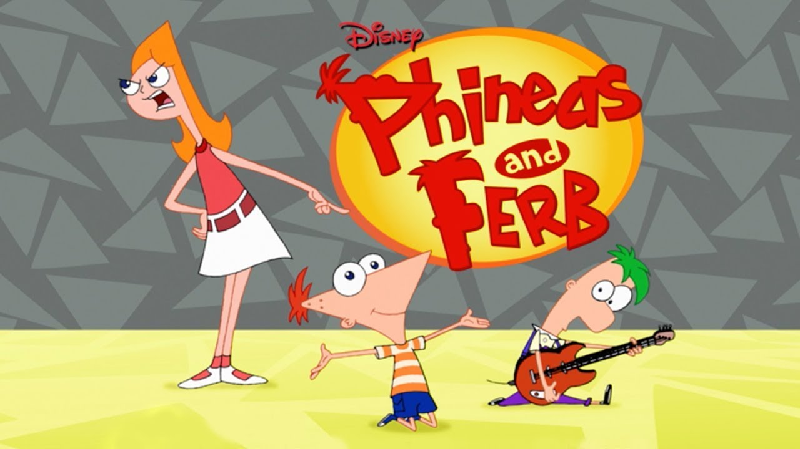

Phineas and Ferb
Your source for all things Phineas and Ferb
About the Show
Phineas Flynn and his stepbrother, Ferb Fletcher, are determined to make every day of their summer vacation fun. They try building a full-scale roller coaster, becoming musicians, building a backyard beach, and traveling back in time to meet dinosaurs. Their family pet, Perry the Platypus, doubles as a secret agent and battles evil. Meanwhile, older sister Candace is tattling on them to Mom and Dad, though she can never seem to catch them in the act.
Learn more from the official wiki fan page

Season 1 Episode List
- Rollercoaster
- Lawn Gnome Beach Party of Terror!
- Flop Starz
- The Fast and the Phineas
- Lights, Candace, Action!
- Raging Bully
- Candace Loses Her Head
- I, Brobot
- Run Away Runway
- The Magnificent Few
- S’Winter
- Jerk de Soleil
- Are You My Mummy?
- Ready for the Bettys
- I Scream, You Scream
- Toy to the World
- Get That Bigfoot Outta My Face!
- It’s a Mud, Mud, Mud, Mud World
- Mom’s Birthday
- Journey to the Center of Candace
- It’s About Time!
- Dude, We’re Gettin’ the Band Back Together!
- Tree to Get Ready
- The Ballad of Badbeard
- Greece Lightning
- Leave the Busting to Us!
- Crack That Whip
- The Best Lazy Day Ever
- Boyfriend from 27,000 B.C.
- Voyage to the Bottom of Buford
- A Hard Day’s Knight
- Bowl‑R‑Rama Drama
- Traffic Cam Caper
- Got Game?
- Comet Kermillian
- Put That Putter Away
- Does This Duckbill Make Me Look Fat?
- The Flying Fishmonger
- One Good Scare Ought to Do It!
- The Monster of Phineas‑n‑Ferbenstein
- Oil on Candace
- Out of Toon
- Hail Doofania!
- Out to Launch
- Phineas and Ferb Get Busted!
- Unfair Science Fair
- Unfair Science Fair Redux (Another Story)